Understand the gym, available equipment, and facilities.
Alphonsians’ Gym.
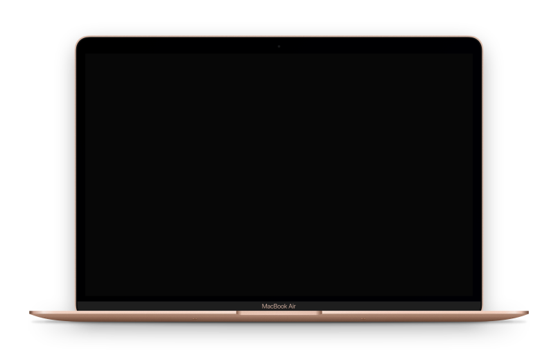
- Project
- Independent redesign + rebuild
- Platform
- Website
- Role
- UX/UI + Front-end development
- Timeline
- August 2026
- Development
- HTML, CSS, JavaScript + Vibe-coding
Redesigning a digital experience to better reflect how students actually use the college gym.
Alphonsians’ Gym is a responsive website for the gym at Alphonsa College, Pala, designed to support students’ fitness and wellness needs.
Overview
Alphonsians’ Gym began as a PGDCA project: a multi-page website for the gym at Alphonsa College, Pala. The original version brought gym information and fitness content into one place.
A few years later, I returned to the same project with a different skill set and a different goal. I wanted to rebuild the experience around what students actually need, keeping what worked, removing what no longer fit, and making the website more focused on the context.
Challenge
The original website worked as an academic project, but it was built around a broad collection of fitness content rather than the specific context of a college gym.
Some features, particularly membership plans and general registration, did not reflect how Alphonsians’ Gym actually works. Students already have access to the gym. What they need is a clearer way to understand the space, plan their visit, access equipment, and find useful training and wellness support. The challenge was to redesign the website to address these needs.
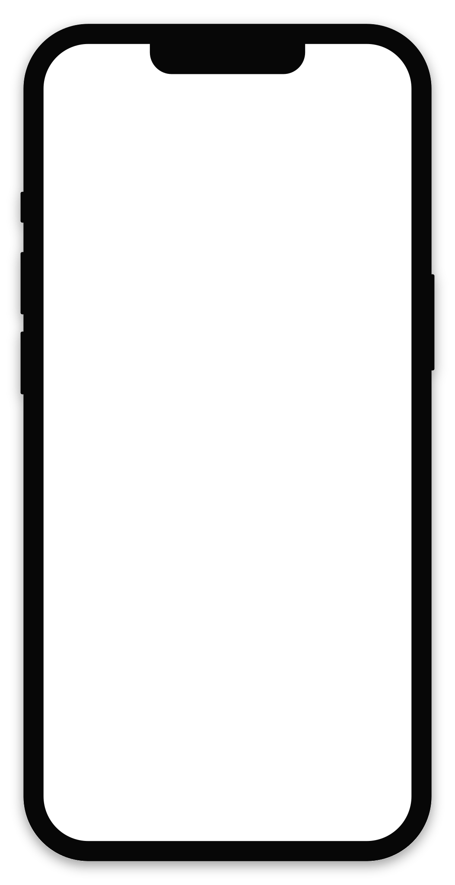
Solution
I rebuilt the website around the student’s gym journey.
- Membership plans became slot booking
- Gym information became a dedicated “The Gym” experience
- Workout guidance moved into “Train”
- Nutrition and recipes into “Wellness”
- The fitness calculators remained available as tools
The result is a website with a clearer purpose: helping students understand the gym, prepare for a visit, book a suitable slot, and access useful resources around their training.
Existing Experience
I began by looking at what still made sense, what needed to change, and how the experience could better reflect the way students would actually use the gym. Some ideas from the previous version of the website were still useful:
- The fitness calculators, workout guidance and wellness information could support students outside the gym
- Information about the gym itself was still important
Other parts felt disconnected from the actual context. The biggest example was membership. Alphonsians’ Gym is part of a women’s college and is available to students, so presenting commercial-style membership plans did not make much sense. The problem was accessing a shared gym at a suitable time.
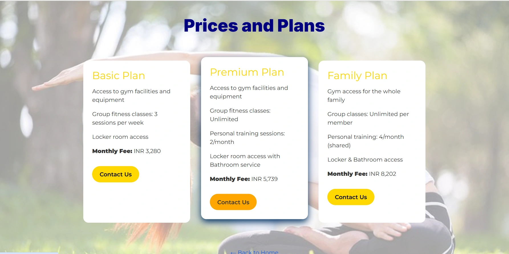
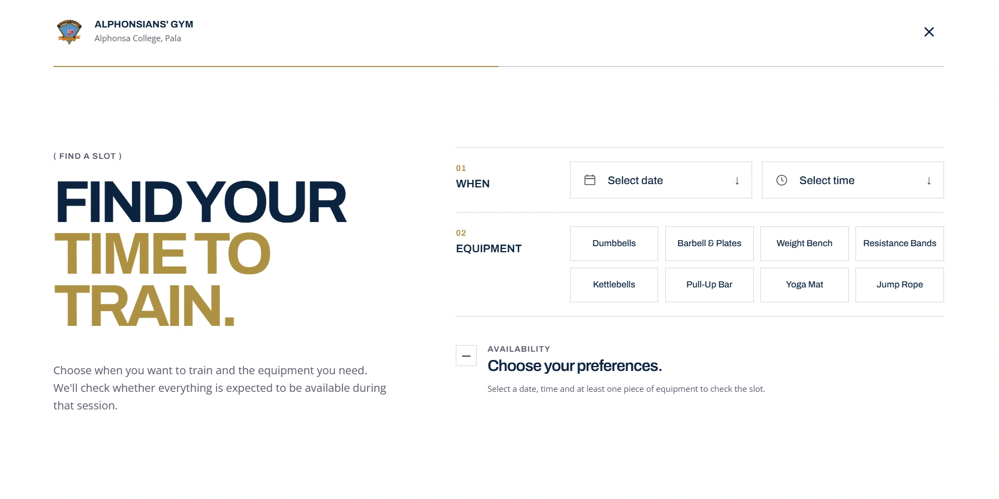
User Journey
Instead of deciding on pages first, I thought about the experience in stages:
Access workout guidance, fitness calculators, recipes, and wellness resources to support training.
Choose a suitable date and time, select the required equipment, and check availability.
Thinking about the experience this way helped me separate needs that had previously been grouped together and gave each part of the website a clearer purpose.
Information Architecture
The older structure included pages such as Prices and Plans, Healthy Living, Personal Workout Plans, Contact Us, and About Us.
For the rebuild, I reorganised the information architecture around what students might need at different points in their gym experience:
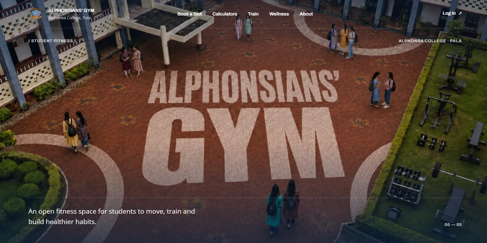
Home introduces the gym and directs students towards the most important actions.
Booking focuses entirely on planning a gym visit through date, time, and equipment selection.
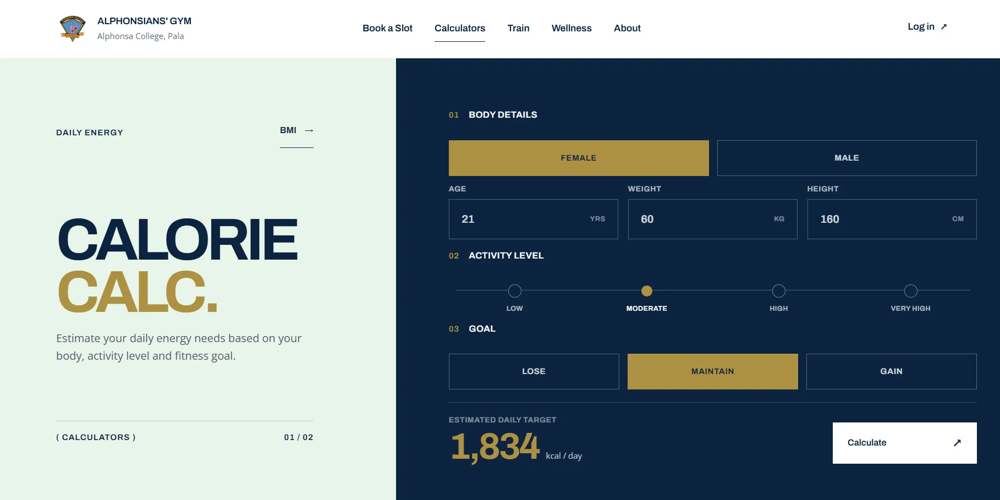
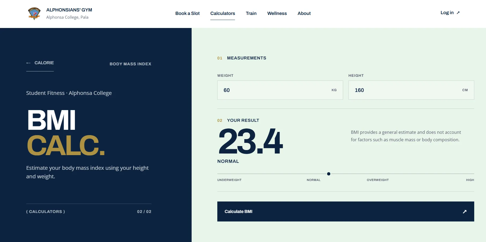
Calculators bring BMI and calorie calculations into a dedicated space.
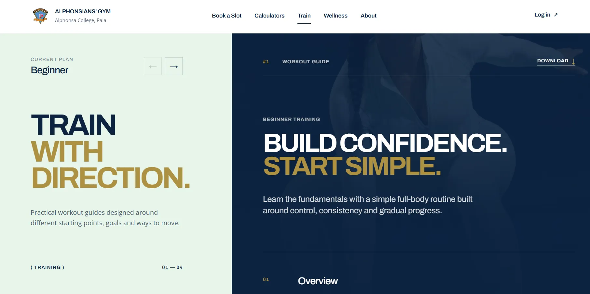
Train contains structured workout guidance for different fitness goals.
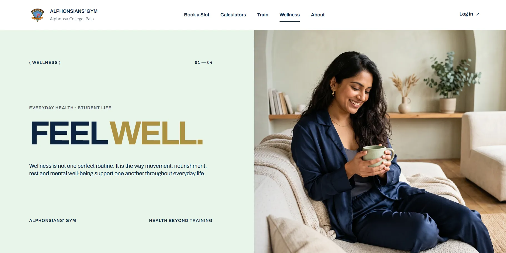
Wellness brings together nutrition, recipes, and healthy-living content.
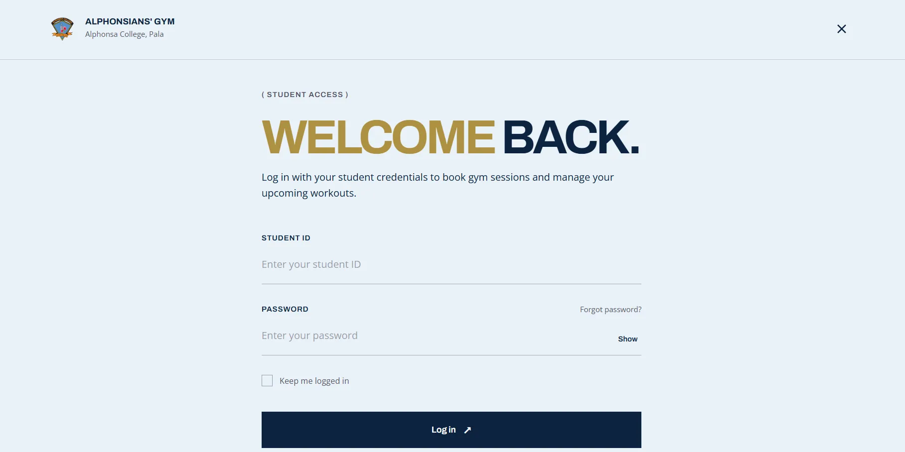
Login explores how a future student account experience could work.
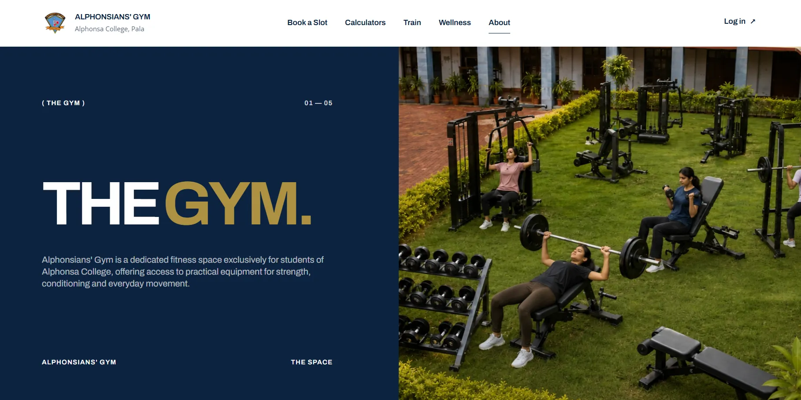
About helps students understand the physical space, available equipment, facilities, access, and people behind it.
Each page now has a clearer reason to exist.
Booking Flow
Booking was the most significant new feature, so I treated it as the central interaction of the redesign. I broke the task into a user flow:
01: Choose a date and time
A student first chooses when she wants to visit
02: Select equipment
Then selects the equipment she plans to use
03: Check availability
The system checks the preferred combination; if not available, it offers alternatives based on availability
04: Confirm
Then the available slot booking is confirmed
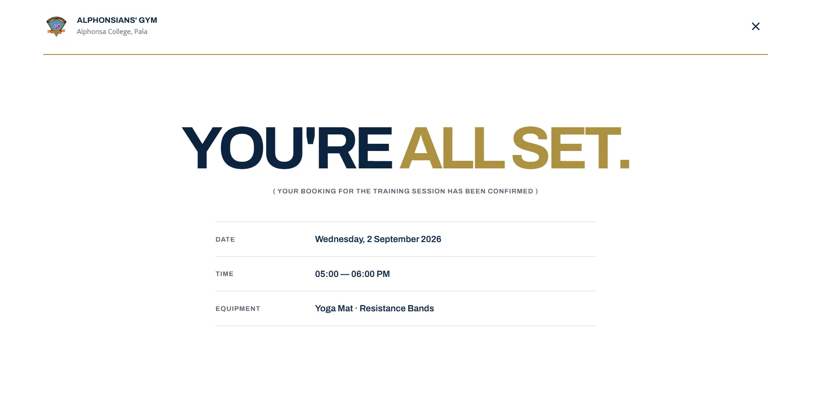
Visual System
After establishing the structure and main interactions, I developed a visual system to accompany it.
The original project relied more heavily on common Bootstrap patterns and page-by-page styling. For the rebuild, I moved towards a more editorial visual style while retaining the brand colours of Alphonsa College.
TYPOGRAPHY
Archivo
Open Sans
I used Archivo for display typography and Open Sans for body content, keeping longer information easy to read.
COLOUR
The colour system is based on the existing brand identity.
SPACING
4 / 8 / 12 / 16 / 24 / 32 / 48 / 64 / 96 / 120
Spacing and page padding that maintain consistency.
Buttons, cards, navigation, and repeated interface patterns were standardised. Motion was also used selectively. Transitions and interactions add personality and reinforce hierarchy across interactive elements.
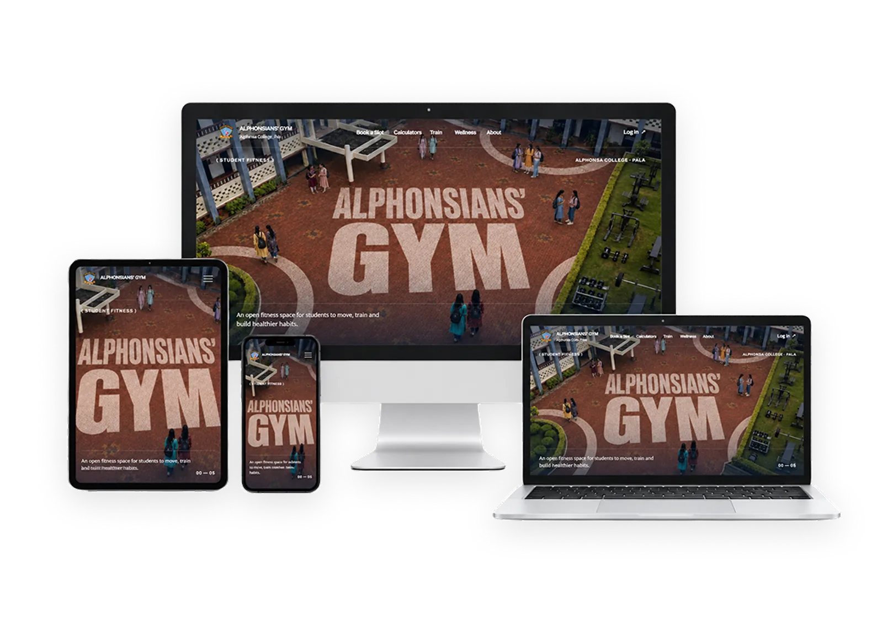
Development
I developed the redesigned website using HTML, CSS, and JavaScript, creating reusable components for shared elements like the navigation and footer.
The website was initially developed for desktop, with adaptations made for tablet and mobile layouts. This required restructuring layouts, adjusting content spacing, and ensuring usability across smaller viewport sizes.
The project also included extensive debugging, addressing navigation behaviour, reusable components, media sizing, animations, and responsive layouts through repeated testing and adjustments before they behaved as intended.
Vibe Coding
This was also one of the projects where AI-assisted development became an intentional part of my workflow.
I used AI to explore implementation approaches, troubleshoot problems, and speed up repetitive coding tasks. But the generated code was rarely the end of the process.
I still needed to describe the intended behaviour precisely, which helped me improve my prompting skills, understand how different pieces of code worked together, test the result, identify conflicts, and refine the implementation.
- Codex
- VS Code
-
 GitHub
GitHub
- ChatGPT
Accessibility
Accessibility was considered throughout development, including semantic HTML, keyboard interaction, visible focus states, clear controls, responsive layouts, and reduced-motion behaviour where appropriate.
Final Experience
The final Alphonsians’ Gym website presents a responsive front-end experience tailored to the various stages of a student’s interactions with the gym. Compared to the original project, it offers a clearer understanding of user needs.
Currently, it functions as an interactive front-end prototype without a live database, authentication, or backend booking infrastructure, so interactions such as booking and login demonstrate the intended product behaviour rather than functioning as an institutional service.
Reflection
Returning to an older project with the design and development skills I had gained since building the original version led me to approach it very differently.
- The original website was a group project and, because it was academic, focused more heavily on development than design. Rebuilding it independently made me think more deeply about why a page or feature should exist in the first place.
- Prioritising the context, identifying the most useful tasks, and organising the experience around them gave the redesign a much clearer direction.
- The development process also influenced my design decisions. Responsive behaviour forced me to question layouts that worked only at one screen size, while reusable components encouraged greater consistency across the website.
- This experience reinforced something important: AI made development faster, but it didn’t remove the need to think.
The main insight from this project was learning to plan, design, and build a digital experience as one connected process.
Thank you for checking out this project!